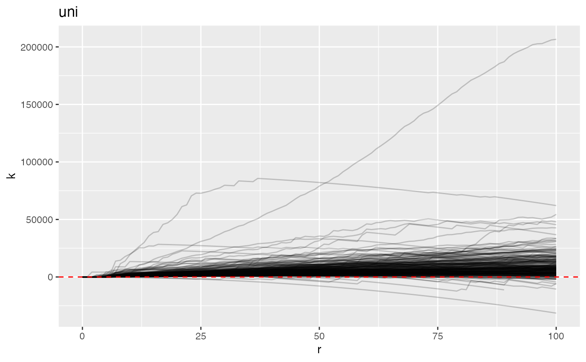
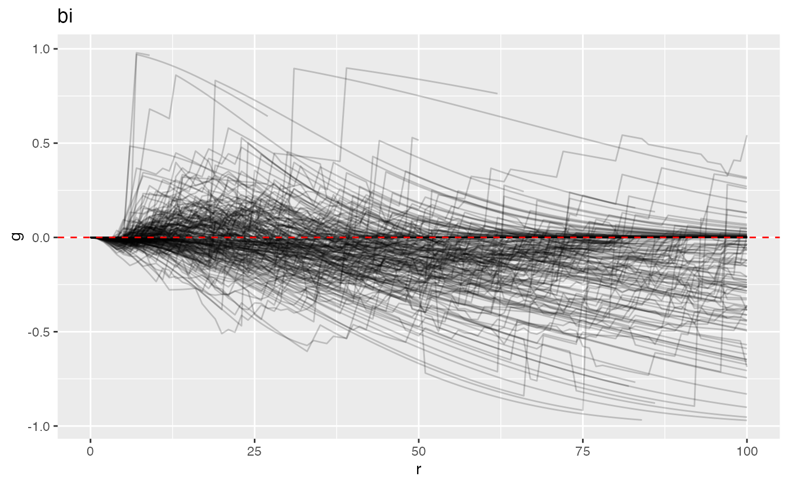

a01_mx_fda.RmdThis vignette describes the mxfda package for analyzing
single-cell multiplex imaging data using tools from functional data
analysis. Analyses for this package are executed and stored using an S4
object of class mxFDA. This vignette outlines how to set up
an mxFDA object from spatial single cell imaging data, how
to calculate spatial summary functions, and exploratory data analysis
and visualization of these spatial summary functions. Details on how to
perform downstream analysis and feature extraction using functional
principal components analysis can be found in the separate vignette
mx_fpca. To perform functional regression on spatial
summary functions from multiplex imaging data, see the
mx_funreg vignette.
#library(mxfda)
library(tidyverse)
#> ── Attaching core tidyverse packages ──────────────────────── tidyverse 2.0.0 ──
#> ✔ dplyr 1.1.3 ✔ readr 2.1.4
#> ✔ forcats 1.0.0 ✔ stringr 1.5.1
#> ✔ ggplot2 3.4.4 ✔ tibble 3.2.1
#> ✔ lubridate 1.9.2 ✔ tidyr 1.3.0
#> ✔ purrr 1.0.2
#> ── Conflicts ────────────────────────────────────────── tidyverse_conflicts() ──
#> ✖ dplyr::filter() masks stats::filter()
#> ✖ dplyr::lag() masks stats::lag()
#> ℹ Use the conflicted package (<http://conflicted.r-lib.org/>) to force all conflicts to become errors
library(patchwork)
devtools::load_all()
#> ℹ Loading mxfda
#> Loading required package: spatstat.explore
#>
#> Loading required package: spatstat.data
#>
#> Loading required package: spatstat.geom
#>
#> spatstat.geom 3.2-7
#>
#>
#> Attaching package: 'spatstat.geom'
#>
#>
#> The following object is masked from 'package:patchwork':
#>
#> area
#>
#>
#> Loading required package: spatstat.random
#>
#> spatstat.random 3.2-1
#>
#> Loading required package: nlme
#>
#>
#> Attaching package: 'nlme'
#>
#>
#> The following object is masked from 'package:dplyr':
#>
#> collapse
#>
#>
#> spatstat.explore 3.2-5What are the goals of mxfda package?
Make it easier to analyze spatial relationships of cells in multiplex images
Use spatial summary functions of point processes to characterize univariate / bivariate clustering
Relate spatial summary functions to patient level outcomes
Explain how to interpret output from functional data analyses
Use completely open source data
Add references here to relevant papers. Need to add to the references.bib file then can cite by:
Wrobel et al. (2019)
All examples in this vignette use data from the VectraPolarisData package on Bioconductor’s ExperimentHub. This package contains data from two multiplex imaging experiments conducted at the University of Colorado Anschutz Medical Campus. A shortcourse on single-cell multiplex imaging using these data is available here.
This data contains (number of subjects, images per subject, number of cells). Load the data.
# load processed lung cancer data
data(lung_df)The central object used with the mxfda package is the
mxFDA object. These objects are created with
make_mxfda() and hold everything from the raw spatial data
to fit functional cox models using derived spatial summary functions. To
save space on large samples, the meta data is kept separately from the
spatial data and when needed, is exported and merged back together.
Slots in the mxFDA object are as follows
Metadata - stores sample specific traits that may be
used as covariate when fitting modelsSpatial - a dataframe of cell level information (x, y,
phenotype, etc) that can be used to calculate spatial summary
functionssubject_key - a character string for the column in the
meta data that denotes the subject samples belong tosample_key - a character string for the columns linking
the meta data and spatial dataunivariate_summaries and
bivariate_summaries - list of calculate spatial summary
functions either imported with XX or calculated with
extract_summary_functions()
functional_pca - list of functional principle
components for the spatial summary functionsfunctional_cox - list of functional cox models that
have been fit.
clinical = lung_df %>%
select(image_id, patient_id, patientImage_id, gender, age, survival_days, survival_status, stage) %>%
distinct()
spatial = lung_df %>%
select(-image_id, -gender, -age, -survival_days, -survival_status, -stage)
mxFDAobject = make_mxfda(metadata = clinical,
spatial = spatial,
subject_key = "patient_id",
sample_key = "patientImage_id")Use text from somewhere else here. Talk about K, g, and G and point to links
Use text from somewhere else here to describe what these are.
Below we calculate univariate Ripley’s K for all immune cells in each
image. Describe that it is using spatstat under the hood. These can be
calculated with our package or spatialTIME. Options for the edge
correction when using Ripley’s K include
"border", "isotropic", "Ripley", "translate". See
spatstat.core::Kest for more details. Below we calculate
the K function across a range of radii from 0 to 300 and use the
isotropic (“iso”) edge correction. The analysis_vars
argument retains variables that may be used in downstream analysis
mxFDAobject = extract_summary_functions(mxFDAobject,
extract_func = extract_univariate,
summary_func = Kest,
r_vec = seq(0, 100, by = 1),
edge_correction = "iso",
markvar = "immune",
mark1 = "immune")COMMENT ON THESE PLOTS
plot(mxFDAobject, y = "fundiff", what = "uni k") +
geom_hline(yintercept = 0, color = "red", linetype = 2)
#> Warning: Removed 48 rows containing missing values (`geom_line()`).
SAY WHAT YOU DO DIFFERENT TO GET L OR G
rm(Gcrossdf)
#> Warning in rm(Gcrossdf): object 'Gcrossdf' not foundUse if you want to do bivariate. We will look at relationship between T-cells and macrophages. There are a few images that have fewer than 5 T-cells or macrophages, which makes estimation less stable for those images.
Below we calculate the bivariate G function, but replace Lcross or Kcross to do L or K bivariate functions
lung_df = lung_df %>%
mutate(phenotype = case_when(phenotype_cd8 == "CD8+" ~ "T-cell",
phenotype_cd14 == "CD14+" ~ "macrophage",
TRUE ~ "other"),
phenotype = factor(phenotype))
lung_df %>%
group_by(patientImage_id) %>%
count(phenotype) %>%
ungroup() %>%
filter(phenotype != "other") %>%
group_by(phenotype) %>%
summarize(sum(n < 5))
#> # A tibble: 2 × 2
#> phenotype `sum(n < 5)`
#> <fct> <int>
#> 1 macrophage 20
#> 2 T-cell 27Automatically removes images that do not have at least 1 cell of each type * Is this behavior we actually want?
spatial = lung_df %>%
select(-image_id, -gender, -age, -survival_days, -survival_status, -stage)
mxFDAobject = make_mxfda(metadata = clinical,
spatial = spatial,
subject_key = "patient_id",
sample_key = "patientImage_id")Running Gcross on T-cells and macrophages
mxFDAobject = extract_summary_functions(mxFDAobject,
summary_func = Gcross,
extract_func = extract_bivariate,
r_vec = seq(0, 100, by = 1),
edge_correction = "rs",
markvar = "phenotype",
mark1 = "T-cell",
mark2 = "macrophage")
plot(mxFDAobject, y = "fundiff", what = "bi g") +
geom_hline(yintercept = 0, color = "red", linetype = 2)
#> Warning: Removed 1365 rows containing missing values (`geom_line()`).